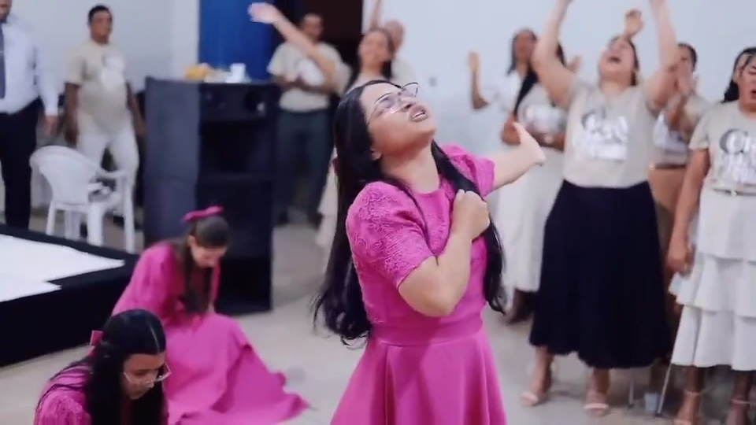
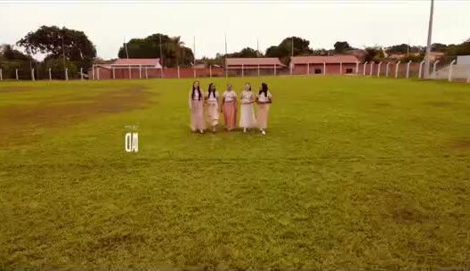
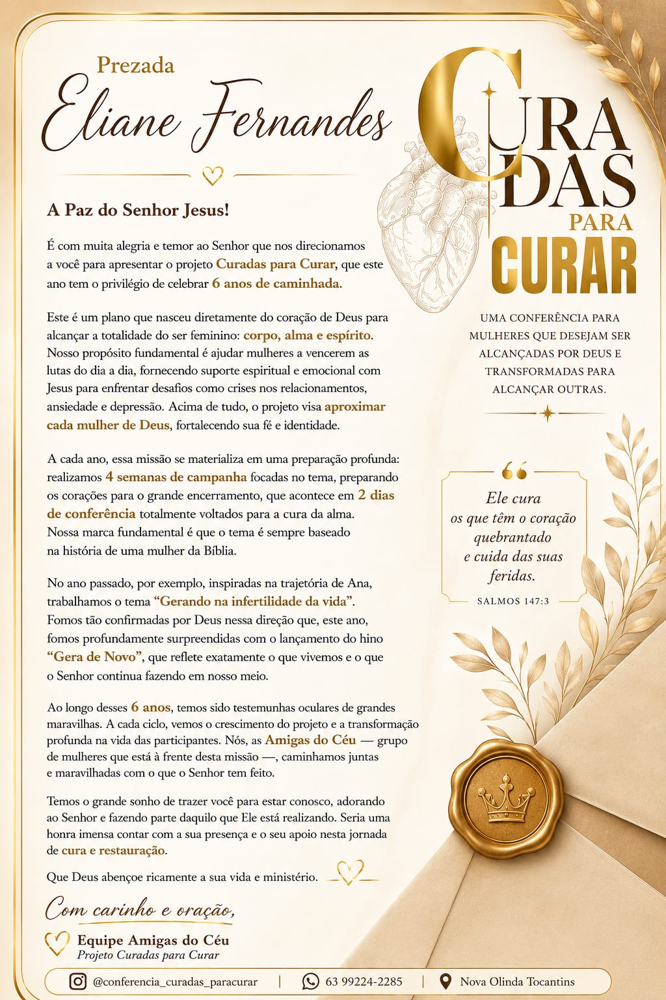

Amigas do Céu · AD Comadesma Área 41 apresentam
Uma conferência para mulheres que desejam ser alcançadas por Deus e transformadas para alcançar outras.
Sobre o evento
O Curadas para Curar é um projeto idealizado pela equipe Amigas do Céu para alcançar a totalidade do ser feminino — corpo, alma e espírito. Ao longo de cada ciclo, são 4 semanas de campanha preparando os corações, seguidas por 2 dias de conferência totalmente voltados para a cura da alma. O tema de cada edição nasce da história de uma mulher da Bíblia, e a missão permanece a mesma: aproximar cada mulher de Deus, fortalecendo sua fé e identidade para vencer as lutas do dia a dia.
"Ele cura os que têm o coração quebrantado e cuida das suas feridas." Salmos 147:3
Edições anteriores



Reviva os melhores momentos
Próxima edição
Traga uma amiga, uma irmã, uma vizinha. Ninguém deveria caminhar sozinha até a cura.